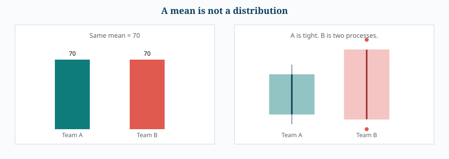
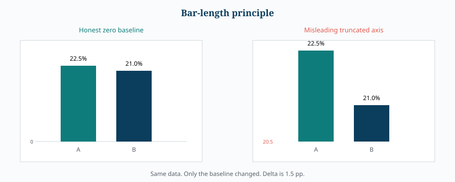

Visual Integrity, Pitfalls & Ethics
16. Visualization Pitfalls
Pitfall 1: choosing the chart before defining the question
Bad workflow:
"I have data, so which chart looks good?"
Better workflow:
"What decision/question am I trying to answer, what variables are involved, and what structure do they have?"
Pitfall 2: confusing categories and continuous values
Country is categorical. Age in exact years is quantitative. Age bands are categorical.
Pitfall 3: assuming correlation means relationship of any kind
Pearson-style correlation is primarily about linear association. Always inspect the scatter plot.
Pitfall 4: assuming time always means line plot
Check whether adjacent observations are conceptually connected.
Pitfall 5: misleading bar baselines
Avoid truncating a bar baseline when the bar length is intended to encode magnitude.
Pitfall 6: excessive categories
Too many categories can make bars, labels, and colors unreadable. Aggregate, filter, rank, or redesign when appropriate.
Pitfall 7: excessive visual decoration
A plot should maximize signal and minimize unnecessary visual complexity. Labels, scales, ordering, and annotations should serve the analytical question.
Pitfall 8: hiding distributional information in a single mean
A mean can conceal skewness, multimodality, outliers, and unequal spread. Consider a box plot, histogram, or raw-point display when distribution matters.


17. Visualization Integrity — Axes and Scale
17.1 Bar-Length Principle
For bar charts:
The visual length of a bar should faithfully represent the magnitude of the value.
A truncated baseline can exaggerate small differences. This is especially dangerous for political polls, market shares, financial comparisons, and executive dashboards.
Example
22.5% versus 21% is a difference of only 1.5 percentage points. A distorted bar scale can make the difference look dramatically larger than it is.


17.2 Stacked Bars
The same baseline principle applies to stacked bars. If a market-share chart starts at 75% rather than zero, a large difference can visually appear small or vice versa.
17.3 Dual Y-Axes
Dual axes are tempting when two metrics have incompatible units or scales, but they can be misleading because changing either scale can change the apparent visual relationship between the series.
Better alternative
Use separate panels with clearly labeled axes. This makes it explicit that the metrics are different while still allowing aligned comparison.
Real use case
Life expectancy may range roughly 50–90 years while HDI ranges from 0–1. A dual-axis chart can make their apparent correlation look strong or weak depending on the chosen axis ranges. Separate panels reduce this ambiguity.
18. Chartjunk, Cognitive Load, and Sensory Overload
A good visualization has two practical measures:
- How many useful insights can the reader extract?
- How quickly can they extract them?
In a meeting or dashboard, the viewer may spend only seconds on a chart. The design therefore needs to optimize for rapid comprehension.
18.1 Chartjunk
Chartjunk = visual elements that make interpretation harder without adding meaningful information.
Common examples:
- Decorative 3D effects.
- Shadows and fake depth.
- Unnecessary pictures.
- Excessive colors.
- Heavy textures or hatching.
- Decorative lines and gradients.
18.2 Skeuomorphism
Skeuomorphism adds real-world visual characteristics to digital objects, such as shadows, physical depth, or realistic imagery. In data visualization these effects can distract from the actual encoding.
18.3 Why 3D Bars Are Usually Harmful
A standard bar chart already uses two dimensions:
- Category.
- Quantitative magnitude.
Adding a third visual dimension without adding a third data variable increases complexity but not information. Perspective also makes endpoints harder to judge accurately.
18.4 Hatching and Excessive Visual Texture
Patterns such as stripes and cross-hatching can be difficult to distinguish, especially with many categories. Prefer a restrained palette and direct labeling when possible.
18.5 Minimalism Is Not "Remove Everything"
Good minimalism means:
Remove unnecessary visual complexity while preserving everything required to understand the data.
Labels, axes, legends, annotations, and gridlines can be useful when they reduce ambiguity. The objective is not minimum ink; it is maximum information per unit of visual complexity.
19. Final Principles — The Visualization Constitution
- Question first, chart second.
- Use position before weaker encodings when precision matters.
- Bar length must be proportional to value; use a zero baseline for ordinary bar magnitude comparisons.
- Do not add 3D merely for decoration.
- Use color according to semantics: qualitative, sequential, or diverging.
- Do not imply order where none exists.
- Do not imply a midpoint where none has meaning.
- Correlation heatmaps summarize linear association; inspect the underlying data for nonlinear structure.
- Use facets when separating groups improves clarity.
- Use polar coordinates mainly for genuinely cyclical phenomena.
- Avoid dual axes when separate panels can communicate the same story more honestly.
- Remove chartjunk, but do not remove necessary context.
- Optimize for insight density and speed of interpretation.
- A beautiful chart that hides the truth is a bad visualization.
Ultimate principle: A visualization is successful when the visual encoding makes the important structure in the data easier to see, compare, interpret, and trust.